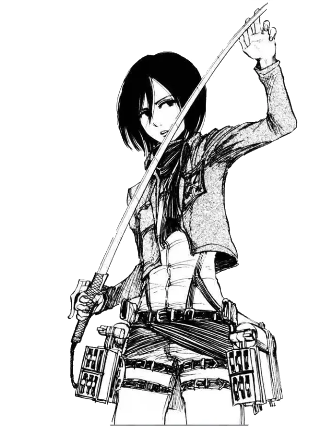
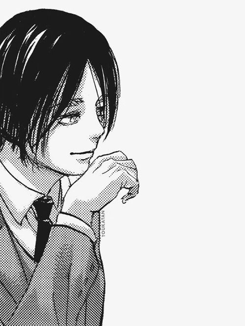
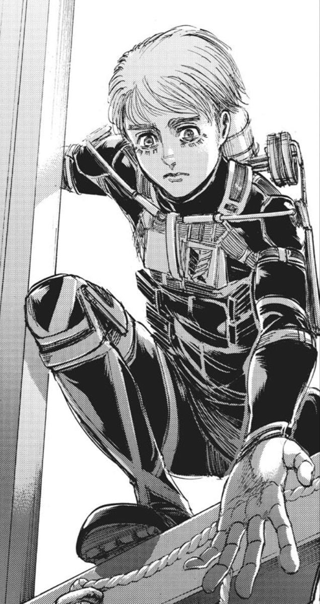
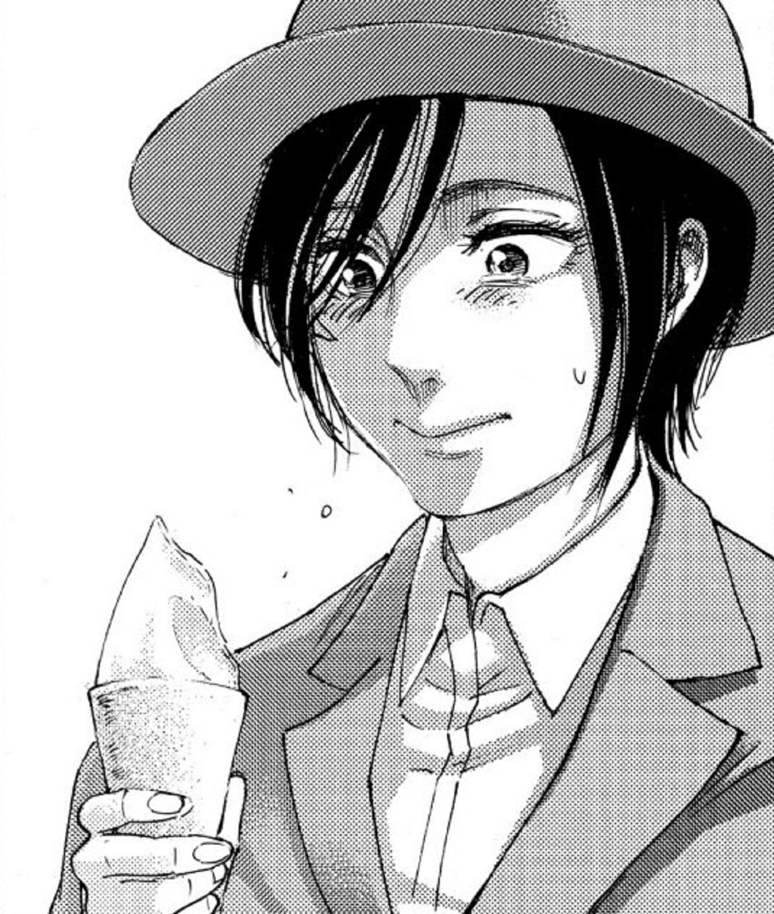
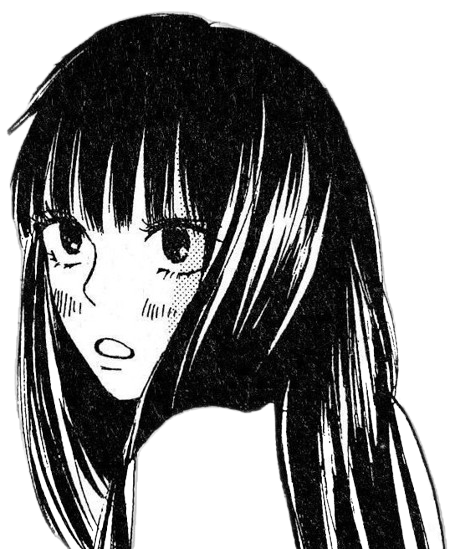
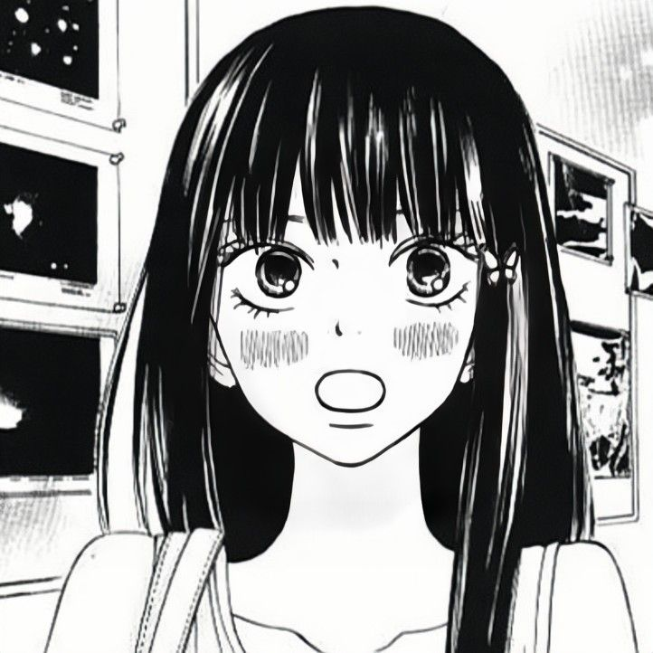
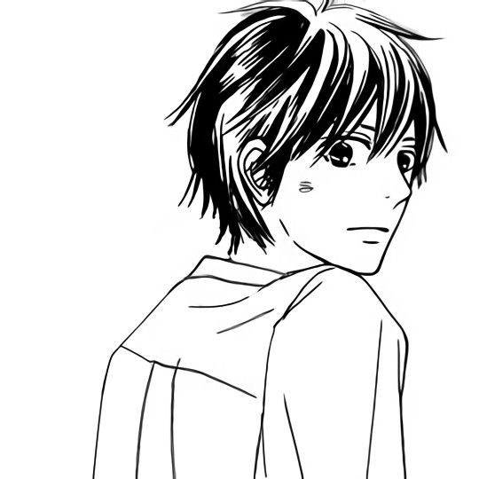

Mikasa Ackerman
Legión de Reconocimiento
Considerada una de las soldadas más hábiles de la humanidad, Mikasa es una guerrera formidable con un instinto protector inquebrantable hacia sus seres queridos. Su lealtad, fuerza y determinación la convierten en una pieza fundamental en la lucha contra los titanes.

alo si




Kuronuma Sawako
Kimi Ni Todoke
Una estudiante de secundaria tímida y bondadosa que es malinterpretada por su parecido con Sadako de 'The Ring'. A pesar de su apariencia intimidante, Sawako tiene un corazón puro y gentil, esforzándose por hacer amigos y encontrar su lugar en el mundo.
ole como achi

